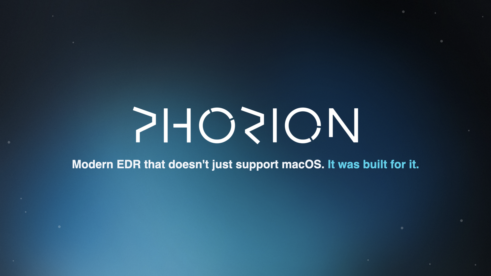
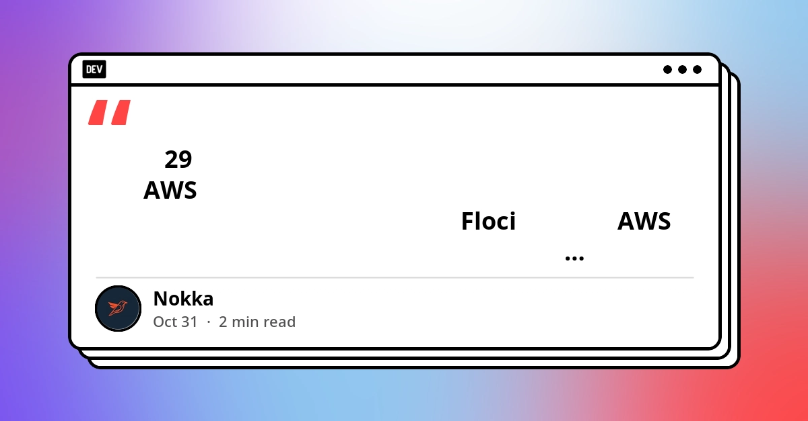
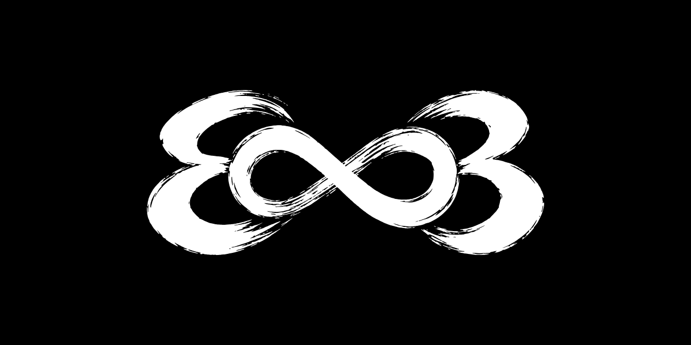
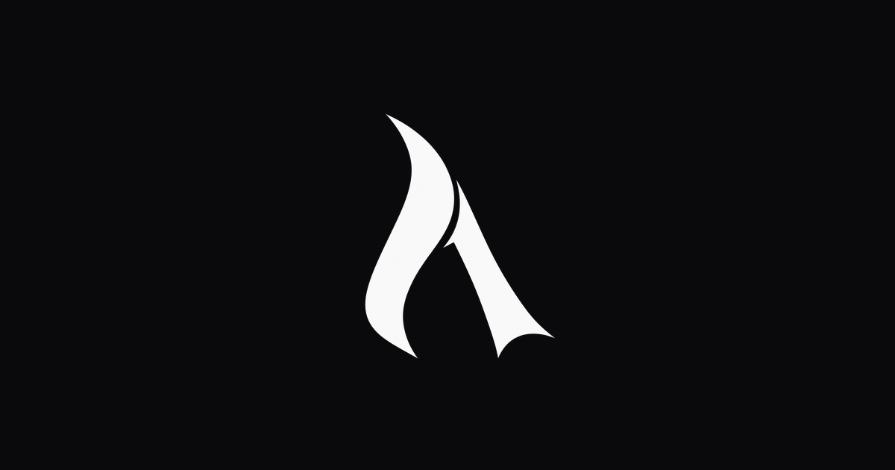

🔥 Top 3 (must read)
Backdoor in Claude Code for VS Code extension on the Cursor Marketplace
(HN, 798 points, 499 comments) A version of the official Claude Code extension shipped on the Cursor marketplace contained a backdoor (a hidden remote access trojan). Reports from DoublePulsar and GossiTheDog say developer laptops worldwide were hit. Why it matters: your team likely runs this extension. Check which marketplace and which version every laptop installed today.

Ship It Weekly: GitHub Actions Jobs Move to AWS, Brotli RCE Exploited, Gheist Steals Actions Secrets & AGENTS.md Hijacks AI Coding Agents
The Brotli decoder bug (CVE-2026-111497) is now on CISA's exploited list and hits Node.js, Bun, Python, Envoy, Istio and .NET. A campaign called Gheist uses stolen GitHub tokens to push branches that print Actions secrets past log masking, and GitHub Actions Linux jobs can now run on AWS, which can break IP allowlists. Why it matters: this touches your Node.js runtime, your CI pipelines, and your AI coding agents (AGENTS.md hijacks) all at once.
R
The Pulse: Time to rethink software security because of AI?
Gergely Orosz looks at a single day with a month's worth of security breaches. He asks if AI tooling makes things worse before they get better. Why it matters: as an EM, this is the context you need to explain to your team why supply chain and agent security now need real process, not just awareness.

🛠 Tools & releases
Floci: run a full AWS stack on your laptop now that LocalStack closed its Community Edition
article is in Thai. If your local dev or CI used LocalStack free tier, Floci is one option to look at.

Ship It Weekly episode
GitHub Actions Linux jobs can now run on AWS as well as Azure. Allowlists and Entra Conditional Access rules that only trust Microsoft IP ranges may break. Covered in the .
R
👔 Engineering & teams
The Pulse: Time to rethink software security because of AI?
good source for a team talk on supply chain risk from AI tools and extensions.
🎯 For me
Ship It Weekly
Node.js: the Brotli RCE (CVE-2026-111497) is being exploited in the wild. Check Node.js and Bun versions in every backend and Docker image.
R
CI pipelines: review which GitHub tokens can push branches to your repos. The Gheist campaign shows secrets can leak even with log masking. Same episode.
phorion.io write-up
AI tools on the team: audit Claude Code extension installs, especially from the Cursor marketplace.
AGENTS.md files: treat them as code. A hijacked AGENTS.md can steer coding agents. Add them to code review.
💡 App ideas & indie builds
Lasm – Write formally verified webapps in Lean for Node/serverless/edge
(HN) — lets you write web apps in Lean, a proof language, and prove they are correct before deploy to Node or edge runtimes. User problem: bugs that tests miss. Inspiration: a small, strong promise ("proven correct") can be a product on its own.

Arsaze – Cursor for video editing
(HN) — Tab-complete and agent edits, but for video instead of code. User problem: video editing is slow and manual. Inspiration: take a UX pattern developers love and move it to a new domain.

Base Layouts: War & Farm Maps (iOS)
article in Portuguese. One-tap copy of Clash of Clans base layouts. User problem: players hunt for layouts in blurry screenshots and dead links in forums. Inspiration: a niche game community with a clear daily pain is a great small-app market.
TNG Episode Guessing Game
(HN) — a Wordle-style daily game for Star Trek: The Next Generation episodes. User problem: fans want a small daily ritual around something they love. Inspiration: the "daily guess" format works for any fandom.
T
A working Nintendo in ~1GB of Qwen weights
(HN) — an NES CPU emulator baked into the weights of a small LLM, so Super Mario Bros runs inside the model. Not a product, but a fun example of pushing a tool far past its normal use.

🎓 Try this
Run a quick extension audit today. On each dev laptop, list installed VS Code and Cursor extensions, confirm the Claude Code extension came from the official source and version, and remove anything from the Cursor marketplace until it is cleared. Steps and indicators are in the phorion.io write-up.